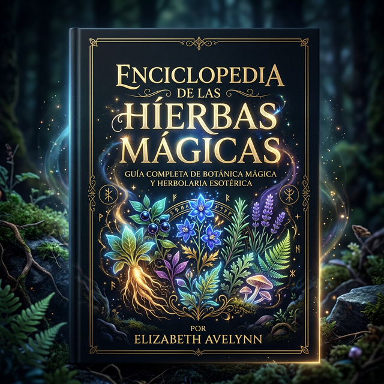
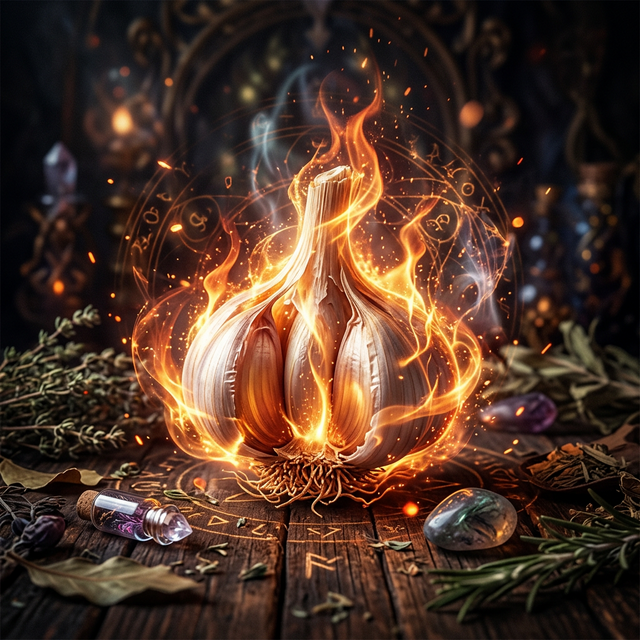
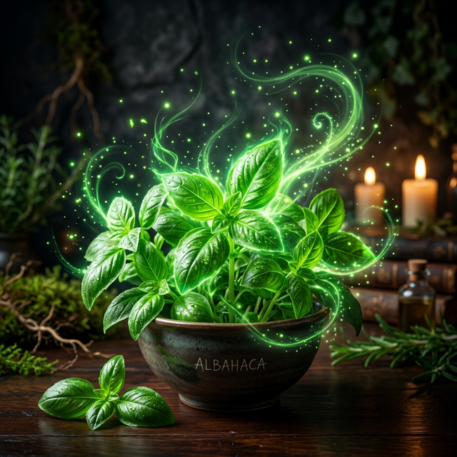

Usa el ratón, haz clic o arrastra las esquinas de las páginas para leer el libro mágico. 🧙♂️📖
Usos mágicos: Protección, exorcismo, purificación. Las ramitas de Abedul se han utilizado para exorcizar espíritus golpeando suavemente a las personas o animales poseídos, dado que es una hierba purificadora y limpiadora. El árbol también se emplea para la protección, algunos colgaban una cinta roja alrededor del tronco para así librarse del mal de ojo. Se dice que el Abedul también protege del rayo. Algunas Brujas hacían sus escobas con ramitas de Abedul. Aguacate (Persea americana)
Usos mágicos: Amor, deseo, belleza. Se come Aguacate para aumentar el deseo sexual. Sembrada en el hogar atraerá el amor. Las Varitas mágicas hechas con su madera son poderosos instrumentos mágicos. Si quieres realzar la belleza, lleva contigo una semilla de Aguacate.
Usos mágicos: Poderes psíquicos, protección, amor e invocación de espíritus. El Ajenjo se quema en forma de incienso para aumentar los poderes psíquicos. Si se cuelga en el espejo retrovisor del automóvil, protegerá de los accidentes en carreteras peligrosas. Ponerlo bajo la cama podrá atraer a la persona amada. También se quema para invocar espíritus, mezclándolo con Sándalo tendrá un mejor efecto en cuanto a este propósito. Segun la leyenda, si se quema en un cementerio los muertos se levantarán y hablarán.

Usos mágicos: Protección, curación, exorcismo, deseo sexual y antirrobos. El ajo se comía en las fiestas dedicadas a Hécate y se dejaban en unaencrucijada como sacrificio en nombre de esta Diosa. Se utiliza para protegerse de la peste. Todavía se emplea para absorber enfermedades. Sólo se tiene que frotar con los dientes de Ajo, frescos y pelados en la parte afectada del cuerpo, y luego tirarlos al agua corriente. Es un gran protector, se pone en casa para evitar la intrusión del mal, para mantener alejados a los ladrones, y se cuelga en la puerta para repeler a las personas envidiosas. El Ajo protege las casas nuevas. Si se lleva consigo protege de los enemigos y del mal tiempo. Se muerde un Ajo para ahuyentar los malos intrusos, o esparciendo su polvo por el suelo. También se pone bajo las almohadas de los niños para protegerlos mientras duermen. Si se frota sobre las cacerolas y sartenes antes de cocinar elimina las vibraciones negativas que podrían contaminar los alimentos. Si se come actúa como inductor del deseo sexual. Y cuando un magneto o piedra de imán natural se frota con Ajo, pierde sus poderes mágicos.

Usos mágicos: Amor, exorcismo, riqueza, facultad de volar, protección. El agradable perfume de la Albahaca fresca produce simpatía entre dos personas y por eso se usa para apaciguar el mal carácter entre los amantes. Se añade a los inciensos de amor y a los saquitos, y las hojas frescas se frotan contra la piel a modo de perfume amoroso natural. Esta también se emplea en las adivinaciones amorosas. Si se desea saber si una persona es honesta o promiscua, se debe poner una ramita de Albahacaen su mano. Se marchitará de inmediato si esa persona es "ligera en el amor". Esta planta proporciona riqueza a quienes la llevan en los bolsillos, y se utiliza para atraer clientes a un negocio colocando un poco en la caja registradora o en el marco de la puerta. La Albahaca asegura que la pareja permanece fiel. Esparciendo Albahaca en polvo por el cuerpo de la persona mientras duerme, especialmente sobre el corazón, y la relación quedará bendecida por la fidelidad. Igualmente se esparce por el suelo, porque donde ella está, no puede vivir el mal. Se emplea en los inciensos de exorcismo y en los baños de purificación. A veces se echa pequeñas cantidades en cada habitación de la casa para su protección. Otro uso que se le da a la Albahaca es para el control de las dietas, pero debe ser con la ayuda de otra persona porque se dice que una mujer (o un hombre) no podrá comer alimento si, en secreto, se ha colocado la Albahaca bajo el plato. Finalmente, como regalo trae buena suerte a un nuevo hogar.
Usos mágicos: Castidad, salud y adivinación. Se huele Alcanfor para atenuar el deseo sexual. También se coloca junto a la cama con el mismo propósito. Una bolsita de Alcanfor colgada del cuello previene los resfriados y la gripe. A veces se utiliza en los inciensos adivinatorios.
Usos mágicos: Prosperidad, contra el hambre, dinero. Guárdese en casa para protegrse de la pobreza y el hambre. Es mejor colocarla dentro de un tarrito dentro de la despensa o armario. También se puede quemar y esparcir las cenizas con el mismo fin. La Alfalfa se utiliza en los hechizos de dinero.
Usos mágicos: Suerte, curación, protección, lluvia y magia de la pesca. Un trozo de Algodón en el azucarero atraerá buena suerte. Lo mismo que si se tira por encima del hombro derecho al amanecer. En este caso la buena suerte aparecerá antes de que acabe el día. Se coloca Algodón en la muela que duele para quitar el dolor. El Algodón que se planta o se esparce en el patio lo mantiene libre de fantasmas y las bolas de Algodón empapadas de vinagre y colocadas en el alféizar de la ventana mantienen alejado el mal. Para hacer que regrese un amor perdido, pon algo de pimienta en un trozo de Algodón y cóselo para hacer un saquito. Llévelo puesto para que su magia surga efecto. Quemar Algodón produce lluvia. La mejor tela para lossaquitos, o cualquier paño necesario en la magia, es la que se hace de Algodón.
Usos mágicos: Dinero, prosperidad, sabiduría. Las Almendras, así como las hojas y la madera, se utiliza en los hechizos para obtener properidad y dinero. Se dice que trepar a un almendro asegura el éxito en las inversiones comerciales. Comer Almendras curará o combatirá las fiebres y conferirá sabiduría. Comer cinco Almendras antes de beber previene la intoxicación. Las Varitas pueden estar hechas de madera de almendro, ya que es una planta de Aire, que es el regente elemental de esa herramienta en algunas tradiciones.
Usos mágicos: Protección, suerte. El aloe, planta popular de interiores, también es protectora. Protege de las influencias malignas y previene de los accidentes en casa. También se cuelgan en las casas para atraer suerte.
Usos mágicos: Fertilidad, amor, sueño, dinero, suerte e invisibilidad. Las semillas y flores de Amapola se utilizan en mezclas elaboradas para ayudar a dormir. También se comen o se llevan consigo para aumentar la fertilidad y para atraer suerte y dinero. También se echan las semillas en la comida para inducir el amor o se emplean en las bolsitas para el amor. Si se desea conocer la respuesta de una pregunta, escríbela sobre un papel blanco con tinta azul. Mételo dentro de una vaina de Amapola y ponlo bajo la almohada. Así la respuesta aparecerá en un sueño. Según la leyenda se puede llegar a la invisibilidad a voluntad, sólo poniendo a remojar en vino las semillas de Amapola durante quince días. Después se bebe el vino en ayunas cada día durante cinco días.
Usos mágicos: Protección, purificación, juventud. Se usa en inciensos de protección y meditación. Las hojas verdes de Anís colocadas en una habitación, ahuyentarán el mal; A veces se colocan alrededor del CírculoMágico para proteger al Brujo de los malos espíritus. También desvía el mal de ojo. El grano de Anís se usa en los baños de purificación, sobre todo con hojas de Laurel. Se utiliza para invocar a los espíritus para que ayuden en las operaciones mágicas, y una ramita colgada del cabecero de la cama devuelve la juventud perdida.
Usos mágicos: Poderes mentales, deseo sexual y poderes psíquicos. Se mastica la semilla para ayudar en la concentración, o en los hechizos de almohadas para inducir el sueño. Quemadas con raíces de Lirio, las semillas de Apio aumentan los poderes psíquicos. El tronco junto con las semillas inducen el deseo sexual se se ingieren.
Usos mágicos: Protección, lluvia, dinero y fertilidad. El Arroz regado sobre el tejado protege contra los infortunios. Un frasco pequeño de Arroz también protege. Arrojar Arroz al aire puede producir lluvia. También se pone en los hechizos de dinero, y se tira tras las parejas de recién casados para aumentar la fertilidad.
Usos mágicos: Dinero. Se utiliza en hechizos de dinero y prosperidad.
Usos mágicos: Protección, suerte, deshacer hechizos, deseos. Graba tu deseo en un trozo de Bambú y entiérralo en un lugar apartado. O también un símbolo mágico, como el Pentagrama, para proteger el hogar al plantarlo en el patio. También se coloca en la puerta para atraer buena suerte. El bambú se utiliza para romper embrujos, bien l evándolo en una bolsita o triturándolo hasta hacerlo polvo y quemandolo después.
Usos mágicos: Fertilidad y prosperidad. La Banana se emplea para la fertilidad y también para curar la impotencia. Las hojas, flores y los frutosdel banano se usan para los hechizos de dinero y prosperidad. Una vieja creencia dice que un bananero nunca debe cortarse, sólo romperse.
Usos mágicos: Se quema Benjuí para purificar y se añade a los inciensos con el mismo fin. Haz un incienso de Benjuí, Canela y Albahaca, y quémalo para atraer clientes a tu negocio. El Benjuí puede sustituirse con Estoraque, con el que está relacionado.
Usos mágicos: Protección y castidad. Debido a sus espinas, todas las especies de Cactus son protectoras. Si se cultivan en el interior protgen contra intrusos y ladrones, y también absorbe las malas influencias. Para que la protección se mayor debe plantarse afuera orientado a todas las direcciones. Las espinas del Cactus se emplean, por las Brujas, para dibujar símbolos mágicos y palabras en las velas. Después, éstas se llevan encima o bien se entierran para que liberen su poder.
Usos mágicos: Protección. Las calabazas colgadas en la puerta principal otorgan protección contra la sugestión. Si se l evan en el bolsil o o en la cartera trozos de calabaza, alejan el mal. Las semillas secas se ponen en el interior de las maracas para asustar a los espíritus malignos, y una calabaza seca, si se corta por la parte superior y se llena de agua, sirve como bola de cristal.
Usos mágicos: Espiritualidad, éxito, curación, poder, poderes psíquicos, deseo sexual, protección y amor. Cuando se quema la Canela como incienso, origina elevadas vibraciones espirituales, favorece la curación, obtiene dinero, estimula los poderes psíquicos y produce vibraciones protectoras. La Canela también se emplea para hacer saquitos e infusiones con estos mismos propósitos.
Usos mágicos: Amor y deseo sexual. El azúcar se ha usado durante mucho tiempo en pociones de amor y deseo sexual. Mastica un trozo de Caña de azúcar mientras piensas en la persona amada. El azucar también se esparce para expulsar el mal, limpiar y purificar los lugares antes de los rituales y hechizos.
Usos mágicos: Curación, amor, visiones y meditación. Esta planta, mejor conocida como marihuana, ha sido utilizada durante mucho tiempo en los hechizos de amor y en la adivinación. Se dice que el humo despierta poderes psíquicos y visiones del futuro. Pero actualmente su uso y venta está restringida por la ley.
Usos mágicos: Deseo sexual y amor. Las semillas se añaden al vino caliente para hacer una rápida poción de deseo sexual. También se utilizan como ingredientes en los pasteles de manzana, para hacer un excelente pastel de amor; Además se añaden a los saquitos e inciensos de amor.
Usos mágicos: Protección, exorcismo, curación, dinero, sueños proféticos y deseo sexual. Sus hojas son decorativas y pueden secarse y ponerse en el hogar para construir un atractivo amuleto protector.
Usos mágicos: Curación, purificación, dinero y protección. El humo del Cedro es purificador y cura la tendencia a tener malos sueños. Se queman ramitas de Cedro y se machacan, o bien se hacen inciensos para curar los enfriamientos de cabeza. El Cedro colgado protege del rayo. Un palo de Cedro tallado con tres puntas, se clava en la tierra con las puntas hacia arriba, cerca del hogar, para protegerlo de todo mal. Si se guarda un trozo de Cedro en el monedero o bolsillo atraerá dinero; También se usa en los inciensos de dinero. Se añade a los saquitos de amor y se quema para inducir los poderes psíquicos. El Cedro se puede sustituir con el Enebro.
Usos mágicos: Protección. Se esparcen cereales por toda la habitación para crear una protección contra el mal. Para proteger a los niños cuando estén lejos (por ejemplo, en la escuela) se arroja un puñado de Cereales tras ellos cuando se marchen. Asegurándose de que no vean hacer esto.
Usos mágicos: Amor y adivinación. La Cereza se emplea para estimular el amor o atraerlo. El jugo de cereza también se usa como sustituto de la sangre, cuando ésta se requiera en viejas recetas.
Usos mágicos: Protección, fuerza y curación. Los Claveles pueden usarse para hechizos con fines protectores. Se ponen en la habitación de un enfermo convaleciente para darle fuerza y energía, y también se emplean en hechizos curativos. Así como poner Claveles en el Altar, durante los rituales de curación, o añadir flores secas en los saquitos e inciensos con el mismo propósito.
Usos mágicos: Protección, exorcismo, amor y dinero. Quemado como incienso el Clavo atrae riquezas, elimina las fuerzas hostiles y negativas, produce vibraciones espirituales y purifica el lugar. Quema Clavo como incienso para impedir que los demás hablen a tus espaldas. También atrae el sexo opuesto.
Usos mágicos: Purificación, protección y castidad. El Coco se ha venido usando durante mucho tiempo en los hechizos de castidad y en rituales protectores. Un Coco puede partirse por la mitad, llenarse con hierbas protectoras adecuadas y cerrarse herméticamente, luego enterrarlo para proteger el hogar o propiedad.
Usos mágicos: Protección, fertilidad, exorcismo y antirrobo. En Alemania se pone Comino en el pan para evitar que los espíritus de los bosques lo roben. La semilla de Comino posee también el "poder de retención", porejemplo, impedirá el robo de cualquier objeto que lo contenga. El Comino se quema como incienso para la protección y se esparce por el suelo, a veces con Sal, para alejar el mal. Se emplea en los hechizos de amor, y cuando se entrega a un amante fomentará la fidelidad. Su semilla se empapa con vino para hacer pociones de deseo sexual. Si se lleva consigo proporciona paz mental.
Usos mágicos: Amor y purificación. El Copal es muy usado en los hechizos de amor y purificación, sobre todo en México.
Usos mágicos: Protección, antirrobo, amor, exorcismo y salud. Protege del robo. El Enebro se cuelga en las puertas como protección contra las fuerzas malignas y se quema en los ritos exorcistas. Una ramita de esta planta protege a su portador de accidentes y ataques por animales salvajes. También defiende de las enfermedades y los fantasmas. El Enebro se añade a los inciensos y mezclas de amor, y sus vayas se llevan para aumentar la potencia viril. Cuando se lleva o se quema, favorece los poderes psíquicos. También ahuyenta a las serpientes.
Usos mágicos: Curación y protección. Las hojas se utilizan para rellenar los muñecos curativos y se llevan encima para conservar la buena salud. También se puede colgar una ramita de Eucalipto en la cama del enfermo. Si se colocan bajo la almohada, las vainas previenen los resfriados. Las hojas también se llevan como protección.
Usos mágicos: Protección y amor. Las ramas del frambueso se cuelgan en las puertas y ventanas como protección. También cuando ha ocurrido una muerte, para que el espíritu de la persona no vuelva a entrar a la casa después de haberla abandonado. La Frambuesa sirve como alimento que induce al amor, y las mujeres embarazadas llevan sus hojas para aliviar los dolores del embarazo y del parto.
Usos mágicos: Amor y suerte. Las Fresas sirven como alimento para el amor y sus hojas se llevan para atraer suerte. Las mujeres embarazadas pueden llevarlas para aliviar los dolores del parto.
Usos mágicos: Amor, paz, curación y espiritualidad. Las flores frescas se colocan en la habitación de la persona enferma o en los Altares de curación para facilitar el proceso. Los pétalos secos también se añaden a las formulas y a los inciensos curativos. La Gardenia seca se esparce por toda la habitación para crear vibraciones de paz, y se añade a los inciensos de Luna. Se utiliza en los hechizos de amor y para atraer buenos espíritus durante los rituales. Poseen vibraciones espirituales muy elevadas.
Usos mágicos: Fertilidad, salud, amor y protección. Todas las clases de Geranio son protectores si se cultivan en el jardín o se meten en casa recién cortados y se les pone en agua. Protege de las serpientes. Una parcela de Geranios rojos, plantada cerca de la casa de una Bruja, avisaba con sus movimientos la llegada de visitantes. Las flores estaban cargadas mágicamente y señalaban ladirección en que los extraños se aproximaban. Los terrenos o parcelas sembrados de Geranios rojos ofrecen protección y fortalecen la salud. Los de flores rosadas se emplean en los hechizos de amor, y las variedades de color blanco aumentan la fertilidad. Los curanderos en México purifican y curan a sus pacientes cepillándoles con Geranios rojos, junto con ramas de Ruda y Pimienta. El Geranio rosa se emplea en saquitos de protección, o bien se frotan sus hojas frescas sobre las puertas y ventanas para protegerlas. Todos los Geranios olorosos tienen diversas propiedades mágicas, la mayoría de las cuales pueden deducirse de la fragancia que desprenden (Nuez moscada, Limón, Menta, etc.). Los que tienen fragancia a Nuez moscada poseen muchas de las propiedades de dicha planta.
Usos mágicos: Amor, deseos, curación, belleza, protección y deseo sexual. La raíz se lleva consigo para atraer el amor, conservar la salud, atraer el dinero y asegurar la potencia sexual. El Ginseng también confiere belleza a toda persona que la l eve consigo. Se quema para ahuyentar los malos espíritus y para romper hechizos. El té hecho con esta planta se emplea como bebida que induce al deseo sexual, ya sea sola o con otras hierbas similares.
Usos mágicos: Fertilidad, deseos, salud y sabiduría. Las mujeres que desean concebir comen semillas de Girasol. Si se corta un Girasol al ponerse el Sol y al mismo tiempo se pide un deseo, éste se cumplirá antes del próximo atardecer, con la condición de que el deseo no debe ser demasiado importante. Los Girasoles que crecen en el jardín protegen contra pestes y dan la mejor de las suertes al jardinero.
Usos mágicos: Adivinación, suerte, deseos, riqueza y fertilidad. Las semil as se han venido comiendo durante mucho tiempo para aumentar la fertilidad, y se ha llevado su cáscara por la misma razón. La Granada es una fruta mágica para la suerte. Si se pide un deseo antes de comerse una, puede ser que se haga realidad. Una rama de granado descubre riquezas ocultas, o atrae dinero a su poseedor. Colgadas sobre la entrada de la casa protegen del mal, y el jugo se utiliza como sustituto de la sangre o tinta mágica. La cáscara seca se añade a los inciensos de riqueza y dinero.
Usos mágicos: Atrae lluvia, protección, suerte, riquezas, juventud eterna salud y exorcismo. El Helecho se introduce en los jarrones de flores por sus propiedades protectoras, y también se pone en el umbral de la puerta. El Helecho protege también el interior de la casa. Para exorcizar a los malos espíritus, se arrojan Helechos sobre carbón en ascuas. Si se quema en campo abierto origina lluvia. El humo producido al quemarse aleja a las serpientes y a las criaturas dañinas. Si se lleva consigo, tiene el poder de guiar a su poseedor hasta un tesoro oculto. Se dice que beber la savia de Helecho confiere la juventud eterna. El Helecho macho se lleva para atraer buena suerte; También atrae a las mujeres.
Usos mágicos: Dinero, deseo sexual, curación, viajes, exorcismo y protección. El uso de Hierbabuena en pociones y mezclas curativas se remota a tiempos antiguos, y se dice que frotar las hojas verdes por la cabeza quita los dolores de cabeza. Si se lleva Hierbabuena en la muñeca de la mano, asegurará que su poseedor no caerá enfermo. Los problemas de estomago pueden aliviarse rellenando una muñeca verde de Hierbabuena y ungiéndolo con aceites curativos. También se utiliza en hechizos de viajes y para provocar el deseo sexual. El aroma vigorizante de sus brillantes verdes hojas lleva a utilizarlo en hechizos de dinero y de prosperidad; El más sencillo de el os consiste en poner unas cuantas hojas en la cartera o billetera, o frotar donde se guarda el dinero. Para limpiar un lugar de males, se esparce agua salada con un esparcidor hecho con tallos tiernos de Hierbabuena, Mejorana y Romero. La Hierbabuena fresca colocada en el Altar invocarán a los buenos espíritus a que se presenten y presten ayuda en la magia. También se tiene en casa como protección.
Usos mágicos: Amor, dinero, sueños proféticos. Sus flores secas se añaden a los saquitos y otras pócimas de amor. Atraen amor espiritual (lo opuesto al amor físico). Atraen dinero y riqueza si se llevan consigo o se queman. ElJazmín además, provoca sueños proféticos si se quema en una habitación; Oler las flores induce al sueño.
Usos mágicos: Protección, poderes psíquicos, curación, purificación, fortaleza. El Laurel se emplea en pociones de clarividencia y sabiduría. Sus hojas de colocan bajo la almohada para inducir sueños proféticos, y también se queman para producir visiones. Es una hierba protectora y de purificación por excelencia, y se lleva como amuleto para repeler el mal y las fuerzas negativas. Se quema o se esparce durante los rituales de exorcismo, se coloca en las ventanas para protegerse del rayo. Para esparcir el agua en una ceremonia de purificación se usa una ramita de Laurel, y el árbol plantado cerca de la casa protege a sus moradores de la enfermedad. Las hojas de Laurel mezcladas con Sándalo pueden quemarse para deshacer maldiciones y malos encantamientos. Las hojas de Laurel dan fuerza a quienes participan en deportes de lucha y atletismo si la llevan consigo en el momento de la competencia. Se escriben deseos en las hojas de Laurel, quemándolas después para que se hagan realidad; Y si se sostiene en la boca una hoja de Laurel ahuyenta la mala suerte.
Usos mágicos: Exorcismo y protección. La Lila ahuyenta el mal donde se plante. Y las flores frescas se pueden poner en una casa encantada para purificarla.
Usos mágicos: Curación, amor y protección. Toma una lima fresca, atraviésala con clavos viejos, púas, agujas y alfileres, y arrójala dentro de un agujero profundo dentro de la tierra. Esto te librará de todas las enfermedades, hechizos y otras cosas. Un collar hecho de Lima cura el dolor de garganta. Las ramas del limero también protegen contra el mal de ojo.
Usos mágicos: Longevidad, purificación, amor y amistad. El jugo de Limón se mezcla con agua para limpiar amuletos, joyas y otros objetos mágicosobtenidos de segunda mano. Lavarlos asegura que todas las vibraciones negativas han sido eliminadas del objeto en cuestión. Las flores secas y la piel se añaden a los saquitos y mezclas de amor, y las hojas se emplean en los tés de deseo sexual. Servir pastel de limón a la pareja ayudará a fortalecer su fidelidad, y colocar una rodaja de Limón bajo la silla del visitante asegura que su amistad sea duradera.
Usos mágicos: Protección, ruptura de hechizos de amor. Plantando Lirios en en jardín mantendrá alejados a los fantasmas y al mal. Protege del mal de ojo y evita las visitas indeseables al domicilio. Los Lirios son buen antídoto para los hechizos de amor; con este propósito debe llevarse un Lirio fresco.
Usos mágicos: Protección y apertura de cerraduras. Quien respire el aroma del Loto recibirá su protección. Pon su raíz debajo de la lengua, y di estas palabras:"SING, ARGGIS", a una puerta cerrada y se abrirá milagrosamente.
Usos mágicos: Dinero, poderes psíquicos y protección. Rodea velas verdes con flores de Madreselva para atraer dinero, o también en un jarrón.
Usos mágicos: Protección, suerte, adivinación. Durante mucho tiempo se ha venerado a la Diosa del Maíz, que representa la abundancia y la fertilidad. Se coloca una espiga de Maíz dentro de la cuna para proteger al bebé de las fuerzas negativas. Un racimo de mazorcas colgadas de un espejo traen buena suerte al hogar, y un collar hecho con granos secos de Maíz rojo previene las hemorragias nasales.
VENENOSA
Usos mágicos: Protección, fertilidad, dinero, amor y salud. Donde exista una Mandrágora no pueden habitar los demonios.
Usos mágicos: Amor, curación. Los Altares de la Wicca se llenan de Manzanas en el Samhain, ya que ésta era considerada como alimento de los muertos. Por la misma razón, el Samhain se conoce a veces como "Fiesta de las Manzanas". También en algunas tradiciones Wicca las Manzanas son un símbolo del Alma, y por eso se entierran en el Samhain, para que quienes renazcan en la primavera tengan alimento en los fríos meses de invierno. La Manzana ha sido empleada por mucho tiempo en los hechizos de amor. Las flores se añaden a los saquitos de amor, a las pociones y a los inciensos. Un hechizo de amor consiste en partir una Manzana a la mitad y compartirla con la persona amada. Este acto asegura que serán felices juntos. Para la curación se puede cortar la Manzana en tres trozos y frotar cada uno contra la parte afectada del cuerpo, y después enterrarlos. Hacer esto en Luna menguante es lo mejor. De la madera del manzano se hacen excelentes Varitas mágicas utilizadas en ritos de amor. Se utiliza sidra de Manzana en lugar de sangre, cuando se requiera en viejas recetas. Las Manzanas pueden convertirse en muñecas o figuras mágicas para su uso en los hechizos.
Usos mágicos: La Mejorana se utiliza en hechizos de amor y además se coloca en las comidas para fortalecerlo. Protege cuando se lleva consigo, cuando se pone alrededor de la casa, y un poco en cada habitación; se renueva cada mes. Las Violetas y la Mejorana, mezcladas se l evan durante los meses de invierno como amuleto contra los resfriados. Si se da a tomar Mejorana a una persona que padece de depresión, le hace feliz. También se utiliza en las mezclas y en los saquitos de dinero.
Usos mágicos: Purificación, sueño, amor, curación y poderes psíquicos. La Menta se ha usado durante mucho tiempo en hechizos de curación y de purificación. Su presencia aumenta las vibraciones de un lugar. Si se huele induce al sueño, y si se coloca bajo la almohada, a veces, da una visión del futuro en los sueños. Se frota contra muebles, paredes y suelos para purificar del mal y fuerzas negativas. También se cree que la Menta excita al amor y por eso puede añadirse a este tipo de mezclas.
Usos mágicos: Valor, amor, poderes psíquicos y exorcismo. Si se lleva encima protege a su portador, y cuando se sostiene en la mano, frena el miedo y confiere valor. Proporciona amor y atrae a los amigos o parientes lejanos con quienes se desea entrar en contacto. Llamará la atención de quien más deseas ver. Con las flores se hace una Infusión y el té resultante se bebe para aumentar los poderes psíquicos. Igualmente es utilizada para exorcizar el mal y la energía negativa de las personas, lugares o cosas.
Usos mágicos: Protección, exorcismos, curación y espiritualidad. En el antiguo Egipto se quemaba Mirra al mediodía en honor a Ra, y también se humeaba en los templos de Isis. Quemada como incienso, la Mirra purifica el lugar, crea vibraciones y paz. Aumenta el poder de cualquier incienso al que se añada. También se incluye en inciensos y saquitos curativos, y su humo se utiliza para consagrar, purificar y bendecir amuletos, talismanes, y herramientas mágicas.
Usos mágicos: Protección, amor, caceías, fertilidad, salud y exorcismo. Como es bien sabido los Druidas veneraban el Muérdago, sobre todo cuando lo encontraban en un Roble. Empleado durante mucho tiempo para protegerse del rayo, la enfermedad, desgracias de todo tipo, incendios, etc.; para ello se lleva consigo o se coloca en un lugar apropiado. Se emplean sus hojas y sus bayas Si se deja cerca de la puerta del dormitorio, proporciona un descanso reparador y hermosos sueños, al igual que cuando de coloca debajo de la almohada o se cuelga del cabecero de la cama. Si se quema ahuyenta el mal.
Usos mágicos: Amor, adivinación, suerte, dinero. La cáscara y las semillas se añaden a los saquitos de amor, y las flores a los saquitos diseñados para la felicidad conyugal. Si se añaden flores frescas o secas al baño, hará más atractivo a quien se baña. La cáscara se coloca en polvos, inciensos y mezclas para obtener prosperidad. El los rituales puede beberse jugo de naranja en vez de vino. Tomar una infusión hecha con cáscaras de Naranja protegerá contra la embriaguez.
Usos mágicos: Amor. Las Orquídeas se han empleado en los hechizos de amor, sobre todo su raíz, la cual se lleva dentro de un saquito. La flor es uno de los símbolos de amor más conocidos en Occidente.
Usos mágicos: Dinero, fertilidad, deseo sexual. El Pachulí huele a tierra fértil, y por eso se ha empleado en mezclas de hechizos de dinero y prosperidad. Se esparce sobre el dinero, se pone en bolsas y carteras y se coloca alrededor de la base de velas verdes. También se emplea en talismanes de fertilidad y en sustituto de "polvo de lápida". El Pachulí se coloca en los baños y saquitos de amor. Contrariamente a lo que se piensa en la actual magia herbal, el Pachulí se usa para atraer a las personas y producir deseo sexual, como lo índica la tradición
Usos mágicos: La Paja da suerte, por eso a veces se transporta en pequeñas bosas. Pueden hacerse pequeñas imágenes mágicas de Paja y utilizarse como muñecas.
Usos mágicos: Curación, fertilidad, protección, exorcismos y dinero. Las piñas de los Pinos se llevan consigo para aumentar la fertilidad y llegar a la vejez llenos de vigor. Una piña cogida a la mitad del verano (conservando aún sus semillas) es un objeto mágico. Para purificar y limpiar la casa se queman hojas se pino durante los meses de invierno. Si se esparcen por el suelo, alejan el mal, y si se queman, exorcizan el lugar de energías negativas y devuelven los hechizos. Tambiénse emplean para purificar los baños. Una cruz de hojas de Pino colgada en la ventana o chimenea evita que entre el mal. También se utilizan en hechizos de dinero.
Usos mágicos: Protección, salud, dinero, curaciones, potencia, fertilidad y suerte. Los Druidas tradicionalmente se reunían en sus rituales en presencia de un Roble, y hay quienes afirman que las plabras "Roble" y "Druida" están relacionadas. Las Brujas muchas veces danzaban bajo este árbol. Un árbol de tan larga vida y fortaleza como el Roble ofrece, de manera natural, protección mágica. Dos ramas de Roble, unidas con hilo en forma de cruz de brazos iguales, sirve como poderoso guardián contra el mal. Debe colgarse en la casa. El llevar consigo una bellota protege contra de las enfermedades y dolores, también aumenta la fertilidad y la potencia sexual. Plantarla a la luz de la Luna asegura que se recibirá dinero próximamente. Un trozo de Roble atrae la buena suerte.
Usos mágicos: Protección, amor, deseo sexual, poderes mentales, exorcismo, purificación, curación, sueño y juventud. El Romero al quemarse emite unas poderosas vibraciones limpiadoras y purificadores, y es usado para limpiar un lugar de fuerzas negativas, sobre todo antes de realizar magia. Es uno de los inciensos más antiguos. Cuando se pone bajo la almohada, asegura sueños libres de pesadillas. Si se pone debajo de la cama, protege a quien duerme de cualquier daño. También se cuelga en el porche o la entrada para impedir que se acerquen los ladrones. Esta planta se l eva consigo para conservar la salud. En el baño purifica. El Romero se ha empleado durante mucho tiempo en inciensos de amor y deseo sexual y en otras mezclas. Las muñecas curativas se rellenan con Romero para aprovechar sus vibraciones curativas. Las hojas de Romero, mezcladas con bayas de Enebro, se queman en la habitación del enfermo para estimular la curación. El Romero se utiliza como sustituto del incienso. Se cultiva Romero para atraer a los Gnomos.
Usos mágicos: Amor, poderes psíquicos, curación, adivinación amorosa, suerte y protección. Las Rosas se han empleado durante mucho tiempo en mezclas de amor debido a su asociación con las emociones. Llevar un ramo de Rosas cuando se efectúan hechizos de amor (se deben quitar las espinas), o bien una sola Rosa en un jarrón colocado sobre el Altar, son potentes en la magia amorosa. El agua de Rosas destilada de los pétalos se pone en el baño de amor. Los escaramujos (el fruto de las Rosas) se ensartan o se llevan encima como cuentas que atraen el amor. Beber un té hecho de capullos de Rosa antes de acostarse induce sueños proféticos. Los pétalos y escaramujos de Rosa se emplean también en inciensos y hechizos curativos, y si se coloca sobre las sienes un paño empapado en agua de Rosas, acabará con los dolores de cabeza. También se ponen en las mezclas para la suerte y, cuando se llevan, actúan como protectores personales. Esparcir pétalos de rosa por toda la casa calma la tensión personal y los cataclismos del hogar. Las Rosas plantadas en el hogar atraen las Hadas.
Usos mágicos: Curación, salud, poderes mentales, exorcismos y amor. Colocar hojas de Ruda sobre la frente elimina los dolores de cabeza. La Ruda se pone en los inciensos y muñecos con fines curativos. Oler Ruda fresca despeja la mente en los asuntos amorosos y mejora los procesosmentales. Añadida al baño rompe todos los hechizos y maldiciones que pudieron haber sido lanzados. También se añade a los inciensos a las mezclas para exorcismos. Es protector cuando se pone en la puerta o si se pone en saquitos, y si se frotan las flores frescas contra el suelo, devuelve cualquier hechizo negativo que haya sido enviado. Se emplea una rama de Ruda fresca para salpicar agua de sal por toda la casa; así se limpia de energía negativa.
Usos mágicos: Sabiduría, protección y deseos. La Salvia se lleva para fomentar la sabiduría, y sus hojas se emplean en hechizos de curación y dinero. Si deseas que algún deseo se haga realidad, escríbelo sobre una hoja de Salvia y escóndela bajo tu almohada. Duerme sobre ella durante tres noches. Si sueñas una vez con lo que deseas, tu deseo se hará realidad; Si no es así, entierra la Salvia para que no te pueda causar ningún daño.
Usos mágicos: Protección, deseos, curación, exorcismo y espiritualidad. El polvo de Sándalo se quema durante los hechizos de protección, curación yexorcismo. Su fragante madera posee vibraciones altamente espirituales, y se quema en sesiones de espiritismo y en rituales de Luna Llena. Puedes escribir en un pedazo de Sándalo un deseo para después quemarlo y visualizarlo al mismo tiempo. Las cuentas de Sándalo son protectoras y fomentan el conocimiento espiritual cuando se llevan consigo.
Usos mágicos: Amor, adivinación amorosa, protección y curación. Las hojas del Sauce se usan en mezclas para atraer el amor, y la madera se emplea para fabricar Varitas mágicas dedicadas a la magia Lunar. Todas las partes del Sauce protegen del mal y puede llevarse o colocarse en casa con ese propósito.
Usos mágicos: Exorcismo, protección, curación, prosperidad y sueño. Sirve para ahuyentar agresores. Colgada en la puerta de entrada y de lasventanas guarda la casa del mal. También posee el poder de obligar a un Hechicero maligno a deshacer cualquier encantamiento o hechizo que pueda haber lanzado contra alguien. Las bayas protegen del mal y de las fuerzas negativas. Si se cultiva cerca de la casa o en el jardín proporciona prosperidad y protege de los estragos causados por Brujería. Lo mismo si se clavan ramas alrededor de la propiedad, pues protege de ladrones. Muchos tienen la creencia de que quemar la madera del Saúco es peligroso y lo tienen prohibido. Pero lo que si es confiable es que la madera del árbol puede usarse para fabricar Varitas mágicas.
Usos mágicos: Protección, dinero, amor, fidelidad, exorcismo y éxito. Encontrarse un Trébol de dos hojas indica que pronto se encontrará un amante. El de tres hojas sirve como amuleto protector. De cuatro hojas ayuda a los hombres a liberarse del servicio militar, protege de la locura, da fuerza a los poderes psíquicos, permite detectar la presencia de espíritus y conduce hacia el dinero. El Trébol de cinco hojas es poderoso para atraer dinero. El Trébol blanco actúa contra los hechizos. Y el Trébol rojo añadido al agua de baño ayuda en cuestiones financieras; También para inducir deseo sexual y la infusión se salpica para eliminar espíritus malignos.
Usos mágicos: Amor, deseo sexual y poderes mentales. Se usa en saquitos de amor; su aroma y su sabor se consideran afrodisiacos. Su semilla sirve para restaurar la energía perdida y para mejorar el intelecto.
Usos mágicos: Amor, protección, purificación, paz, dinero, juventud, sueño y curación. Es un ingrediente común en las mezclas de amor y los hechizos protectores. Cualquier parte de esta planta puede portarse como amuleto personal. Salpicar una infusión ahuyenta a los malos espíritus. Se esparce para que actúe como pacificador y se lleva para calmar emociones. La Verbena también es curativa y atrae buena fortuna y protección ante todo encantamiento a quien se unte con su jugo. También se quema para disipar el amor no correspondido.
© 2026 Revista Digital Mágica